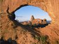

WHAT IS GEOGRAPHY?

Connecting with Space and Place
Geography is the study of places and the relationships between people and their
environments. Geographers explore both the physical properties of Earth’s surface
and the human societies spread across it. They also examine how human culture
interacts with the natural environment and the way that locations and places can
have an impact on people. Geography seeks to understand where things are found,
why they are there, and how they develop and change over time.
Physical Geography
Physical geography is the study of Earth’s seasons, climate,
atmosphere
, soil, streams,
landforms, and oceans.

Human Geography
Human geography is the study of the distribution of networks
of people and cultures on Earth’s surface.